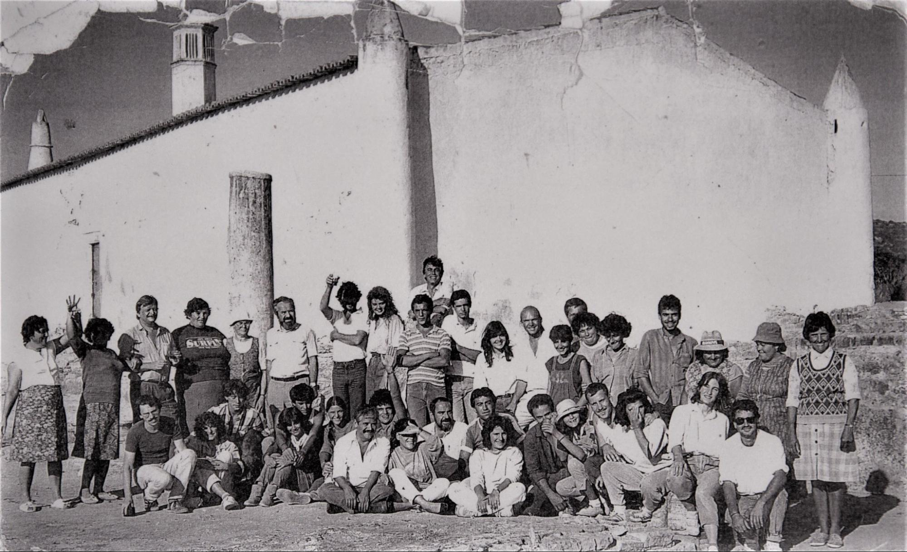

MILREU COMMUNITY PROJECT

WHAT IS MILREU COMMUNITY PROJECT?
The Milreu community project is a multidisciplinary initiative involving short-term active participation standalone projects, each assessed upon completion. The activities follow models in all World focusing on Cultural Resource Management (CRM), education, public administration and integration. Each initiative has been reviewed to ensure aspects of participation and engagement are properly considered. Community involvement is central, from planning to execution, with an emphasis on inclusion and training so that the population can understand and actively contribute to the preservation of the Roman Ruins of Milreu.
SCOPE
|
Unearthing the Past: In Situ Research and Community Engagement |
|
Museum of Memories - An Itinerant and Virtual Exposition |
|
Open Milreu: Building Knowledge and Connections |
|
Beyond Books: Engaging Learning Through Interactive Circuits |
|
Documenting Milreu's History Together |